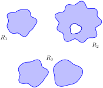

Suppose a particle moves along a curve \(C\) under the influence of an electromagnetic force described by a vector field \(\vec F\text{.}\) Since a force is inducing motion, work is performed. How can we calculate how much work is performed?
Recall that when moving in a straight line, if \(\vec F\) represents a constant force and \(\vec d\) represents the direction and length of travel, then work is simply \(W = \vec F\cdot \vec d\text{.}\) However, we generally want to be able to calculate work even if \(\vec F\) is not constant and \(C\) is not a straight line.
As we have practiced many times before, we can calculate work by first approximating, then refining our approximation through a limit that leads to integration.
Assume as we did in Section 15.1 that \(C\) can be parametrized by the arc length parameter \(s\text{.}\) Over a short piece of the curve with length \(ds\text{,}\) the curve is approximately straight and our force is approximately constant. The straight-line direction of this short length of curve is given by \(\vec T\text{,}\) the unit tangent vector; let \(\vec d = \vec T\, ds\text{,}\) which gives the direction and magnitude of a small section of \(C\text{.}\) Thus work over this small section of \(C\) is \(\vec F \cdot \vec d = \vec F\cdot \vec T\, ds\text{.}\)
Summing up all the work over these small segments gives an approximation of the work performed. By taking the limit as \(ds\) goes to zero, and hence the number of segments approaches infinity, we can obtain the exact amount of work. Following the logic presented at the beginning of this chapter in the Integration Review, we see that
\begin{equation*}
W = \int_C \vec F\cdot \vec T\, ds\text{,}
\end{equation*}
a line integral.
This line integral is beautiful in its simplicity, yet is not so useful in making actual computations (largely because the arc length parameter is so difficult to work with). To compute actual work, we need to parametrize \(C\) with another parameter \(t\) via a vector-valued function \(\vec r(t)\text{.}\) As stated in Section 15.1, \(ds = \norm{\vrp(t)}\, dt\text{,}\) and recall that \(\vec T = \vrp(t)/\norm{\vrp(t)}\text{.}\) Thus
where the final integral uses the differential \(d\vec r\) for \(\vrp(t)\,dt\text{.}\)
Subsection15.3.1Evaluating Line Integrals over Vector Fields
These integrals are known as line integrals over vector fields. By contrast, the line integrals we dealt with in Section 15.1 are sometimes referred to as line integrals over scalar fields. Just as a vector field is defined by a function that returns a vector, a scalar field is a function that returns a scalar, such as \(z = f(x,y)\text{.}\) We waited until now to introduce this terminology so we could contrast the concept with vector fields.
We formally define this line integral, then give examples and applications.
Definition15.3.1.Line Integral Over A Vector Field.
Let \(\vec F\) be a vector field with continuous components defined on a smooth curve \(C\text{,}\) parametrized by \(\vrt\text{,}\) and let \(\vec T\) be the unit tangent vector of \(\vrt\text{.}\) The line integral over \(\vec F\) along \(C\) is
In Definition 15.3.1, note how the dot product \(\vec F \cdot \vec T\) is just a scalar. Therefore, this new line integral is really just a special kind of line integral found in Section 15.1; letting \(f(s) = \vec F(s)\cdot \vec T(s)\text{,}\) the right-hand side simply becomes \(\int_C f(s)\, ds\text{,}\) and we can use the techniques of that section to evaluate the integral. We combine those techniques, along with parts of Equation (15.3.1), to clearly state how to evaluate a line integral over a vector field in the following Key Idea.
Key Idea15.3.2.Evaluating a Line Integral Over A Vector Field.
Let \(\vec F\) be a vector field with continuous components defined on a smooth curve \(C\text{,}\) parametrized by \(\vrt\text{,}\)\(a\leq t\leq b\text{,}\) where \(\vec r\) is continuously differentiable. Then
An important concept implicit in this Key Idea: we can use any continuously differentiable parametrization \(\vrt\) of \(C\) that preserves the orientation of \(C\text{:}\) there isn't a “right” one. In practice, choose one that seems easy to work with.
Notation note: the above Definition and Key Idea implicitly evaluate \(\vec F\) along the curve \(C\text{,}\) which is parametrized by \(\vrt\text{.}\) For instance, if \(\vec F = \langle x+y, x-y\rangle\) and \(\vrt = \langle t^2,\cos t\rangle\text{,}\) then evaluating \(\vec F\) along \(C\) means substituting the \(x\)- and \(y\)-components of \(\vrt\) in for \(x\) and \(y\text{,}\) respectively, in \(\vec F\text{.}\) Therefore, along \(C\text{,}\)\(\vec F = \langle x+y,x-y\rangle = \la t^2+\cos t, t^2-\cos t\ra\text{.}\) Since we are substituting the output of \(\vrt\) for the input of \(\vec F\text{,}\) we write this as \(\vec F\big(\vrt\big)\text{.}\) This is a slight abuse of notation as technically the input of \(\vec F\) is to be a point, not a vector, but this shorthand is useful.
We use an example to practice evaluating line integrals over vector fields.
Example15.3.3.Evaluating a line integral over a vector field: computing work.
Two particles move from \((0,0)\) to \((1,1)\) under the influence of the force field \(\vec F = \langle x, x+y\rangle\text{.}\) One particle follows \(C_1\text{,}\) the line \(y=x\text{;}\) the other follows \(C_2\text{,}\) the curve \(y=x^4\text{,}\) as shown in Figure 15.3.4. Force is measured in newtons and distance is measured in meters. Find the work performed by each particle.
To compute work, we need to parametrize each path. We use \(\vec r_1(t) = \langle t,t\rangle\) to parametrize \(y=x\text{,}\) and let \(\vec r_2(t) =\langle t,t^4\rangle\) parametrize \(y=x^4\text{;}\) for each, \(0\leq t\leq 1\text{.}\)
Along the straight-line path, \(\vec F\big(\vec r_1(t)\big) = \langle x, x+y\rangle = \langle t, t+t\rangle = \langle t,2t\rangle\text{.}\) We find \(\vrp_1(t) =\langle 1,2\rangle\text{.}\) The integral that computes work is:
Along the curve \(y = x^4\text{,}\)\(\vec F\big(\vec r_2(t)\big) = \la x, x+y\ra = \la t, t+t^4\ra\text{.}\) We find \(\vrp_2(t) = \la 1, 4t^3\ra\text{.}\) The work performed along this path is
Note how differing amounts of work are performed along the different paths. This should not be too surprising: the force is variable, one path is longer than the other, etc.
Example15.3.5.Evaluating a line integral over a vector field: computing work.
Two particles move from \((-1,1)\) to \((1,1)\) under the influence of a force field \(\vec F = \la y, x\ra\text{.}\) One moves along the curve \(C_1\text{,}\) the parabola defined by \(y = 2x^2-1\text{.}\) The other particle moves along the curve \(C_2\text{,}\) the bottom half of the circle defined by \(x^2+(y-1)^2=1\text{,}\) as shown in Figure 15.3.6. Force is measured in pounds and distances are measured in feet. Find the work performed by moving each particle along its path.
For \(C_2\text{,}\) it is probably simplest to parametrize the half circle using sine and cosine. Recall that \(\vec r(t) = \la \cos t, \sin t\ra\) is a parametrization of the unit circle on \(0\leq t\leq 2\pi\text{;}\) we add 1 to the second component to shift the circle up one unit, then restrict the domain to \(\pi\leq t\leq 2\pi\) to obtain only the lower half, giving \(\vec r_2(t) = \la \cos t, \sin t+1\ra\text{,}\)\(\pi\leq t\leq 2\pi\text{,}\) and hence \(\vrp_2(t) = \la -\sin t, \cos t\ra\) and \(\vec F\big(\vec r_2(t)\big) = \la y,x\ra = \la \sin t+1,\cos t\ra\text{.}\)
Note how the work along \(C_1\) and \(C_2\) in this example is the same. We'll address why later in this section when conservative fields and path independence are discussed.
Subsection15.3.2Properties of Line Integrals Over Vector Fields
Line integrals over vector fields share the same properties as line integrals over scalar fields, with one important distinction. The orientation of the curve \(C\) matters with line integrals over vector fields, whereas it did not matter with line integrals over scalar fields.
It is relatively easy to see why. Let \(C\) be the unit circle. The area under a surface over \(C\) is the same whether we traverse the circle in a clockwise or counterclockwise fashion, hence the line integral over a scalar field on \(C\) is the same irrespective of orientation. On the other hand, if we are computing work done by a force field, direction of travel definitely matters. Opposite directions create opposite signs when computing dot products, so traversing the circle in opposite directions will create line integrals that differ by a factor of \(-1\text{.}\)
Theorem15.3.7.Properties of Line Integrals Over Vector Fields.
Let \(\vec F\) and \(\vec G\) be vector fields with continuous components defined on a smooth curve \(C\text{,}\) parametrized by \(\vrt\text{,}\) and let \(k_1\) and \(k_2\) be scalars. Then
\begin{equation*}
\ds \int_C\big(k_1\vec F+k_2\vec G\big)\cdot d\vec r = k_1\int_C\vec F\cdot d\vec r +k_2\int_C\vec G\cdot d\vec r\text{.}
\end{equation*}
Let \(C\) be piecewise smooth, composed of smooth components \(C_1\) and \(C_2\text{.}\) Then
\begin{equation*}
\int_C\vec F\cdot d\vec r = \int_{C_1}\vec F\cdot d\vec r + \int_{C_2}\vec F\cdot d\vec r\text{.}
\end{equation*}
Let \(C^*\) be the curve \(C\) with opposite orientation, parametrized by \(\vec r\,^*\text{.}\) Then
We demonstrate using these properties in the following example.
Example15.3.8.Using properties of line integrals over vector fields.
Let \(\vec F = \la 3(y-1/2),1\ra\) and let \(C\) be the path that starts at \((0,0)\text{,}\) goes to \((1,1)\) along the curve \(y=x^3\text{,}\) then returns to \((0,0)\) along the line \(y=x\text{,}\) as shown in Figure 15.3.9. Evaluate \(\oint_C \vec F\cdot d\vec r\text{.}\)
As \(C\) is piecewise smooth, we break it into two components \(C_1\) and \(C_2\text{,}\) where \(C_1\) follows the curve \(y=x^3\) and \(C_2\) follows the curve \(y=x\text{.}\)
We parametrize \(C_1\) with \(\vec r_1(t) = \la t, t^3\ra\) on \(0\leq t\leq 1\text{,}\) with \(\vrp_1(t) = \la 1,3t^2\ra\text{.}\) We will use \(\vec F\big(\vec r_1(t)\big) = \la 3(t^3-1/2),1\ra\text{.}\)
While we always have unlimited ways in which to parametrize a curve, there are 2 “direct” methods to choose from when parametrizing \(C_2\text{.}\) The parametrization \(\vec r_2(t)=\la t,t\ra\text{,}\)\(0\leq t\leq 1\) traces the correct line segment but with the wrong orientation. Using Property 3 of Theorem 15.3.7, we can use this parametrization and negate the result.
Another choice is to use the techniques of Section 11.5 to create the line with the orientation we desire. We wish to start at \(( 1,1)\) and travel in the \(\vec d = \la -1,-1\ra\) direction for one length of \(\vec d\text{,}\) giving equation \(\vec \ell(t) = \la 1,1\ra + t\la -1,-1\ra = \la 1-t,1-t\ra\) on \(0\leq t\leq 1\text{.}\)
Either choice is fine; we choose \(\vec r_2(t)\) to practice using line integral properties. We find \(\vrp_2(t) = \la 1,1\ra\) and \(\vec F\big(\vec r_2(t)\big) = \la 3(t-1/2),1\ra\text{.}\)
Evaluating the line integral (note how we subtract the integral over \(C_2\) as the orientation of \(\vec r_2(t)\) is opposite):
If we interpret this integral as computing work, the negative work implies that the motion is mostly against the direction of the force, which seems plausible when we look at Figure 15.3.9.
Example15.3.10.Evaluating a line integral over a vector field in space.
Let \(\vec F = \la -y, x, 1\ra\text{,}\) and let \(C\) be the portion of the helix given by \(\vrt = \langle \cos t,\sin t, t/(2\pi)\rangle\) on \([0,2\pi]\text{,}\) as shown in Figure 15.3.11. Evaluate \(\int_C\vec F\cdot d\vec r\text{.}\)
Subsection15.3.3The Fundamental Theorem of Line Integrals
We are preparing to make important statements about the value of certain line integrals over special vector fields. Before we can do that, we need to define some terms that describe the domains over which a vector field is defined.
A region in the plane is connected if any two points in the region can be joined by a piecewise smooth curve that lies entirely in the region. In Figure 15.3.12, sets \(R_1\) and \(R_2\) are connected; set \(R_3\) is not connected, though it is composed of two connected subregions.
A region is simply connected if every simple closed curve that lies entirely in the region can be continuously deformed (shrunk) to a single point without leaving the region. (A curve is simple if it does not cross itself.) In Figure 15.3.12, only set \(R_1\) is simply connected. Region \(R_2\) is not simply connected as any closed curve that goes around the “hole” in \(R_2\) cannot be continuously shrunk to a single point. As \(R_3\) is not even connected, it cannot be simply connected, though again it consists of two simply connected subregions.
We have applied these terms to regions of the plane, but they can be extended intuitively to domains in space (and hyperspace). In Figure 15.3.13.(a), the domain bounded by the sphere (at left) and the domain with a subsphere removed (at right) are both simply connected. Any simple closed path that lies entirely within these domains can be continuously deformed into a single point. In Figure 15.3.13.(a), neither domain is simply connected. A left, the ball has a hole that extends its length and the pictured closed path cannot be deformed to a point. At right, two paths are illustrated on the torus that cannot be shrunk to a point.
We will use the terms connected and simply connected in subsequent definitions and theorems.

Figure15.3.12.\(R_1\) is simply connected; \(R_2\) is connected, but not simply connected; \(R_3\) is not connected
Figure15.3.13.The domains in (a) are simply connected, while the domains in (b) are not
Recall how in Example 15.3.5 particles moved from \(A = (-1,1)\) to \(B = (1,1)\) along two different paths, wherein the same amount of work was performed along each path. It turns out that regardless of the choice of path from \(A\) to \(B\text{,}\) the amount of work performed under the field \(\vec F = \la y, x\ra\) is the same. Since our expectation is that differing amounts of work are performed along different paths, we give such special fields a name.
Let \(\vec F\) be a vector field defined on an open, connected domain \(D\) in the plane or in space containing points \(A\) and \(B\text{.}\) If the line integral \(\int_C \vec F\cdot d\vec r\) has the same value for all choices of paths \(C\) starting at \(A\) and ending at \(B\text{,}\) then
\(\vec F\) is a conservative field and
The line integral \(\int_C \vec F\cdot d\vec r\) is path independent and can be written as
When \(\vec F\) is a conservative field, the line integral from points \(A\) to \(B\) is sometimes written as \(\int_A^B\vec F\cdot d\vec r\) to emphasize the independence of its value from the choice of path; all that matters are the beginning and ending points of the path.
How can we tell if a field is conservative? To show a field \(\vec F\) is conservative using the definition, we need to show that all line integrals from points \(A\) to \(B\) have the same value. It is equivalent to show that all line integrals over closed paths \(C\) are 0. Each of these tasks are generally nontrivial.
There is a simpler method. Consider the surface defined by \(z = f(x,y) = xy\text{.}\) We can compute the gradient of this function: \(\nabla f = \la f_x, f_y\ra = \la y, x\ra\text{.}\) Note that this is the field from Example 15.3.5, which we have claimed is conservative. We will soon give a theorem that states that a field \(\vec F\) is conservative if, and only if, it is the gradient of some scalar function \(f\text{.}\) To show \(\vec F\) is conservative, we need to determine whether or not \(\vec F = \nabla f\) for some function \(f\text{.}\) (We'll later see that there is a yet simpler method). To recognize the special relationship between \(\vec F\) and \(f\) in this situation, \(f\) is given a name.
Definition15.3.15.Potential Function.
Let \(f\) be a differentiable function defined on a domain \(D\) in the plane or in space (i.e., \(z = f(x,y)\) or \(w = f(x,y,z)\)) and let \(\vec F = \nabla f\text{,}\) the gradient of \(f\text{.}\) Then \(f\) is a potential function of \(\vec F\text{.}\)
We now state the Fundamental Theorem of Line Integrals, which connects conservative fields and path independence to fields with potential functions.
Theorem15.3.16.Fundamental Theorem of Line Integrals.
Let \(\vec F\) be a vector field whose components are continuous on a connected domain \(D\) in the plane or in space, let \(A\) and \(B\) be any points in \(D\text{,}\) and let \(C\) be any path in \(D\) starting at \(A\) and ending at \(B\text{.}\)
\(\vec F\) is conservative if and only if there exists a differentiable function \(f\) such that \(\vec F = \nabla f\text{.}\)
If \(\vec F\) is conservative, then
\begin{equation*}
\int_C\vec F\cdot d\vec r = \int_A^B \vec F\cdot d\vec r = f(B) - f(A)\text{.}
\end{equation*}
Once again considering Example 15.3.5, we have \(A = (-1,1)\text{,}\)\(B = (1,1)\) and \(\vec F = \la y,x\ra\text{.}\) In that example, we evaluated two line integrals from \(A\) to \(B\) and found the value of each was 2. Note that \(f(x,y) = xy\) is a potential function for \(\vec F\text{.}\) Following the Fundamental Theorem of Line Integrals, consider \(f(B) - f(A)\text{:}\)
We practice using this theorem again in the next example.
Example15.3.17.Using the Fundamental Theorem of Line Integrals.
Let \(\vec F = \la 3x^2y+2x,
x^3+1\ra\text{,}\)\(A = (0,1)\) and \(B = (1,4)\text{.}\) Use the first part of the Fundamental Theorem of Line Integrals to show that \(\vec F\) is conservative, then choose any path from \(A\) to \(B\) and confirm the second part of the theorem.
To show \(\vec F\) is conservative, we need to find \(z = f(x,y)\) such that \(\vec F = \nabla f = \la f_x, f_y\ra\text{.}\) That is, we need to find \(f\) such that \(f_x = 3x^2y+2x\) and \(f_y = x^3+1\text{.}\) As all we know about \(f\) are its partial derivatives, we recover \(f\) by integration:
Note how the constant of integration is more than “just a constant”: it is anything that acts as a constant when taking a derivative with respect to \(x\text{.}\) Any function that is a function of \(y\) (containing no \(x\)'s) acts as a constant when deriving with respect to \(x\text{.}\)
Likewise, integrating \(f_y\) with respect to \(y\) gives:
\begin{equation*}
\int \frac{\partial f}{\partial y}\, dy = \int( x^3+1)\, dy = x^3y+ y + C(x)\text{.}
\end{equation*}
These two results should be equal with appropriate choices of \(C(x)\) and \(C(y)\text{:}\)
\begin{equation*}
x^3y+x^2 + C(y) = x^3y+ y + C(x) \Rightarrow C(x) = x^2 \text{ and } C(y) = y\text{.}
\end{equation*}
We find \(f(x,y) = x^3y+x^2+y\text{,}\) a potential function of \(\vec F\text{.}\) (If \(\vec F\) were not conservative, no choice of \(C(x)\) and \(C(y)\) would give equality.)
By the Fundamental Theorem of Line Integrals, regardless of the path from \(A\) to \(B\text{,}\)
To illustrate the validity of the Fundamental Theorem, we pick a path from \(A\) to \(B\text{.}\) The line between these two points would be simple to construct; we choose a slightly more complicated path by choosing the parabola \(y = x^2+2x+1\text{.}\) This leads to the parametrization \(\vrt = \la t, t^2+2t+1\ra\text{,}\)\(0\leq t\leq 1\text{,}\) with \(\vrp(t) = \la t, 2t+2\ra\text{.}\) Thus
The Fundamental Theorem of Line Integrals states that we can determine whether or not \(\vec F\) is conservative by determining whether or not \(\vec F\) has a potential function. This can be difficult. A simpler method exists if the domain of \(\vec F\) is simply connected (not just connected as needed in the Fundamental Theorem of Line Integrals), which is a reasonable requirement. We state this simpler method as a theorem.
Theorem15.3.18.Curl of Conservative Fields.
Let \(\vec F\) be a vector field whose components are continuous on a simply connected domain \(D\) in the plane or in space. Then \(\vec F\) is conservative if and only if \(\curl \vec F = 0\) or \(\vec 0\text{,}\) respectively.
In Example 15.3.17, we showed that \(\vec F =\langle 3x^2y+2x,x^3+1\rangle\) is conservative by finding a potential function for \(\vec F\text{.}\) Using the above theorem, we can show that \(\vec F\) is conservative much more easily by computing its curl:
T/F: In practice, the evaluation of line integrals over vector fields involves computing the magnitude of a vector-valued function.
2.
Let \(\vec F(x,y)\) be a vector field in the plane and let \(\vec r(t)\) be a two-dimensional vector-valued function. Why is “\(\vec F\big(\vec r(t)\big)\)” an “abuse of notation”?
3.
T/F: The orientation of a curve \(C\) matters when computing a line integral over a vector field.
4.
T/F: The orientation of a curve \(C\) matters when computing a line integral over a scalar field.
5.
Under “reasonable conditions,” if \(\curl \vec F = \vec 0\text{,}\) what can we conclude about the vector field \(\vec F\text{?}\)
6.
Let \(\vec F\) be a conservative field and let \(C\) be a closed curve. Why are we able to conclude that \(\oint _C \vec F\cdot d\vec r = 0\text{?}\)
Problems
Exercise Group.
In the following exercises, a vector field \(\vec F\) and a curve \(C\) are given. Evaluate \(\ds\int_C\vec F\cdot d\vec r\text{.}\)
7.
\(\vec F = \langle y, y^2\rangle\text{;}\)\(C\) is the line segment from \((0,0)\) to \((3,1)\text{.}\)
8.
\(\vec F = \langle x,x+y\rangle\text{;}\)\(C\) is the portion of the parabola \(y=x^2\) from \((0,0)\) to \((1,1)\text{.}\)
9.
\(\vec F = \langle y,x\rangle\text{;}\)\(C\) is the top half of the unit circle, beginning at \((1,0)\) and ending at \((-1,0)\text{.}\)
10.
\(\vec F = \langle xy,x\rangle\text{;}\)\(C\) is the portion of the curve \(y=x^3\) on \(-1\leq x\leq 1\text{.}\)
11.
\(\vec F = \langle z,x^2,y\rangle\text{;}\)\(C\) is the line segment from \((1,2,3)\) to \((4,3,2)\text{.}\)
12.
\(\vec F = \langle y+z,x+z,x+y\rangle\text{;}\)\(C\) is the helix \(\vec r(t) = \langle \cos t,\sin t,t/(2\pi)\rangle\) on \(0\leq t\leq 2\pi\text{.}\)
Exercise Group.
In the following exercises, find the work performed by the force field \(\vec F\) moving a particle along the path \(C\text{.}\)
13.
\(\vec F = \langle y,x^2\rangle\) N; \(C\) is the segment of the line \(y=x\) from \((0,0)\) to \((1,1)\text{,}\) where distances are measured in meters.
14.
\(\vec F = \langle y,x^2\rangle\) N; \(C\) is the portion of \(y=\sqrt x\) from \((0,0)\) to \((1,1)\text{,}\) where distances are measured in meters.
15.
\(\vec F = \langle 2xy,x^2,1\rangle\) lbs; \(C\) is the path from \((0,0,0)\) to \((2,4,8)\) via \(\vec r(t) = \langle t, t^2, t^3\rangle\) on \(0\leq t\leq 2\text{,}\) where distance are measured in feet.
16.
\(\vec F = \langle 2xy,x^2,1\rangle\) lbs; \(C\) is the path from \((0,0,0)\) to \((2,4,8)\) via \(\vec r(t) = \langle t,2t, 4t\rangle\) on \(0\leq t\leq 2\text{,}\) where distance are measured in feet.
Exercise Group.
In the following exercises, a conservative vector field \(\vec F\) and a curve \(C\) are given.
Find a potential function \(f\) for \(\vec F\text{.}\)
Compute \(\curl \vec F\text{.}\)
Evaluate \(\ds\int_C \vec F\cdot d\vec r\) directly, i.e., using Key Idea 15.3.2.
Evaluate \(\ds\int_C \vec F\cdot d\vec r\) using the Fundamental Theorem of Line Integrals.
17.
\(\vec F = \langle y+1,x\rangle\text{,}\)\(C\) is the line segment from \((0,1)\) to \((1,0)\text{.}\)
18.
\(\vec F = \langle 2x+y, 2y+x\rangle\text{,}\)\(C\) is curve parametrized by \(\vec r(t) = \langle t^2-t, t^3-t\rangle\) on \(0\leq t\leq 1\text{.}\)
19.
\(\vec F = \langle 2xyz,x^2z,x^2y\rangle\text{,}\)\(C\) is curve parametrized by \(\vec r(t) = \langle 2t+1,3t-1,t\rangle\) on \(0\leq t\leq 2\text{.}\)
20.
\(\vec F = \langle 2x, 2y, 2z\rangle\text{,}\)\(C\) is curve parametrized by \(\vec r(t) = \langle \cos t,\sin t, \sin (2t)\rangle\) on \(0\leq t\leq 2\pi\text{.}\)
21.
Prove part of Theorem 15.3.18: let \(\vec F =\langle M,N,P\rangle\) be a conservative vector field. Show that \(\curl \vec F = 0\text{.}\)